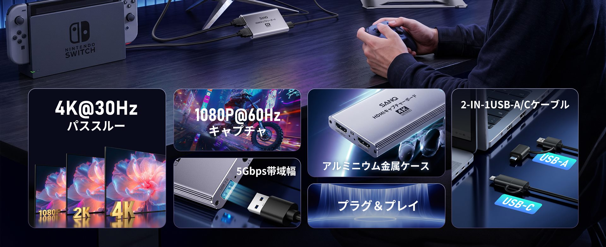
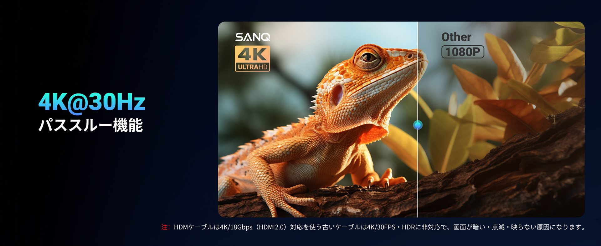
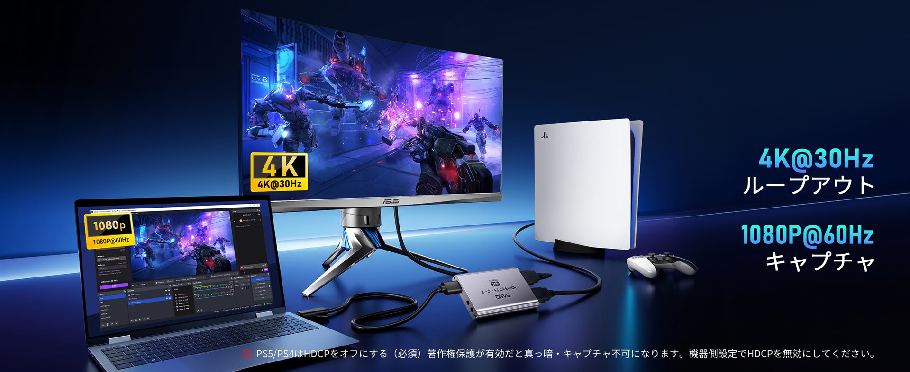
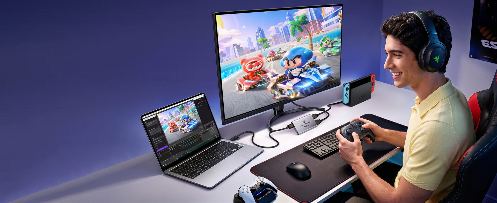
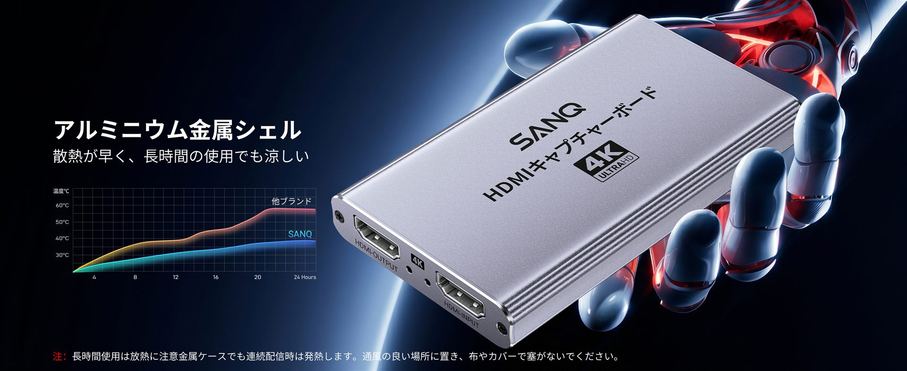
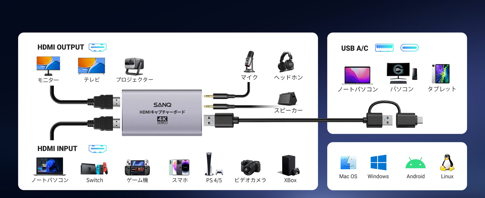
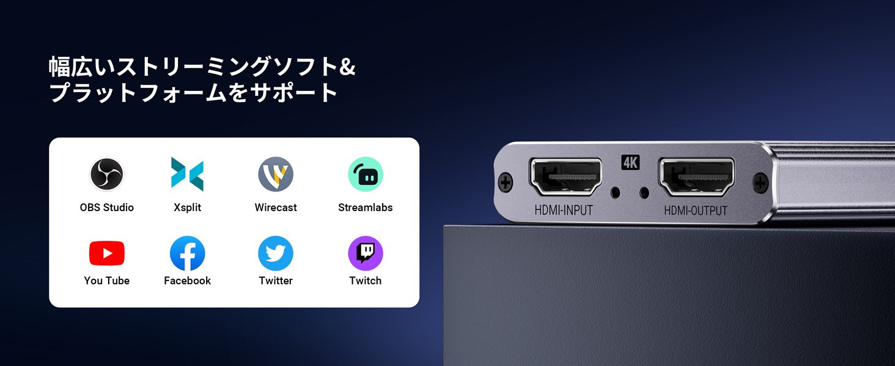
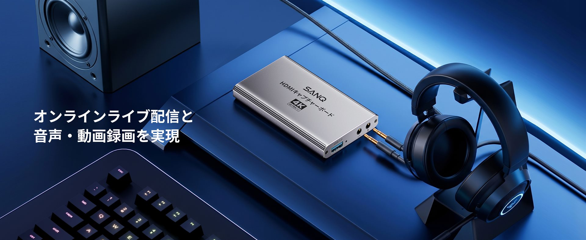

BRAND CONTENT
A+ 详情页
11 MODULES · 2.44:1








4K HDMI 视频采集转接器
从产品本体、核心性能到直播与游戏场景，建立一套连续、易读且具有科技质感的亚马逊商品视觉。
SCENE DIRECTION
场景视觉
以深蓝和冷紫为主色建立统一氛围，通过游戏、直播与教学三类真实场景，把采集、环出和兼容性转译成可感知的使用体验。
LISTING SYSTEM
主副图 × A+
向下滚动时，右侧 A+ 保持正常网页节奏；左侧设备停留在视野内，屏幕中的主副图逐张吸附切换。
11 MODULES · 2.44:1








当前 demo 先完整呈现 SANQ02。后续加入第二、第三款转接器时，可以沿用同一套 KV、Banner、主副图与 A+ 双轨结构，并在页内增加快速切换索引。